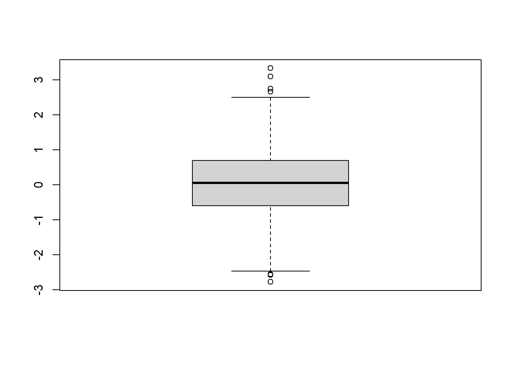

set.seed(12345)
data <- rnorm(1000)10 Univariat analys
Du behöver följande paket:
ggplot2, tibble
Univariat analys innebär statistisk analys på en variabel. Det första vi behöver veta när vi inleder vårt analysarbete är förstås, vad är våra variabler? Det är viktigt att vara intimt bekant med alla de variabler du vill använda i dina vidare analyser. Med andra ord: detta skede kan kännas överflödigt, men är ytterst viktigt att utföra för att kunna göra mer komplexa analyser med framgång.
I detta kapitel lär du dig de grundläggande univariata måtten. De kan delas upp i tre kategorier: lägesmått, spridningsmått, och osäkerhetsmått. Först diskuteras deras matematiska definition, sedan ges exempel på hur du kan implementera dem i R. Det är bra att förstå matematiken bakom de grundläggande måtten, eftersom det kan hjälpa förståelsen av senare metoder.
För exemplen i R använder jag ett slumpmässigt urval ur normalfördelningen. Du kan reproducera resultaten genom att återskapa följande kod:
10.1 Lägesmått
10.1.1 Medeltal
Det första av lägesmåtten är medeltalet. Definitionen på (aritmetiska) medeltalet är tämligen enkel:
\[ \bar{x} = \frac{x_i + x_{i+1} + ... + x_{n-1} + x_n}{n} = \frac{\sum_{i=1}^{n}{x_i}}{n} \] I klarspråk: Medeltalet är lika med summan av alla individuella värden från \(1\) till \(n\), dividerat med antalet värden \(n\).
Medeltalet ger dig en siffra som berättar kring vilket värde variablens fördelning är centrerad. Däremot berättar den inget om spridningen runt detta värde. Följande tre beräkningar är tämligen olika men ger samma medeltal:
- \((1 + 2 + 3)/3 = 2\)
- \((1 + 4 + 1)/3 = 2\)
- \((0 + 0 + 6)/3 = 2\)
Medeltalet är också sensitivt för extrema värden. Dessa är värden som ligger långt från de andra. Se följande exempel:
\[ \bar{x} = \frac{1 + 2 + 1 + 4 + 300}{5} = 61.6 \] Medeltalet beskriver förvisso centret av fördelningen, men det är ju mycket högre än de flesta datapunkter! Som tur finns det verktyg för att hantera detta, som vi behandlar inom kort.
Medelvärde kräver att variabeln är på kvantitativ skalenivå, alltså intervallskala eller kvotskala. Ett medelvärde kan alltså inte räknas på nominella eller ordinella variabler, eftersom det blir meningslöst. Tänk dig att du har samlat data på personer och deras hemkommuner, delat i tre nivåer: Landsbygdskommun, tätortskommun och urban kommun. Du kanske har gett dessa tre kategorier värden, så som 1, 2 och 3, eftersom det är lättare att hantera siffror än text. Det vore dock absurt att säga att “Medelpersonen hade kommuntyp 1.54” eller “Den vanligaste kommuntypen var 2.3”. Vad betyder det? Landsortskommun? Täturban kommun? Landorban kommun?
I R kan du beräkna ett medeltal med funktionen mean(data):
mean(data)[1] 0.0461981610.1.2 Median
Det andra lägesmåttet är medianen. Dess matematiska definition är onödigt komplex, då det är lättare att förstå medianen med ord. Medianen är värdet som skiljer den största halvan från den minsta halvan av datafördelningen. Låt oss säga att vi har följande datafördelning:
\[ D = \{4, 3, 8, 19, 2, 6, 2, 57, 2\} \] Vi kan hämta medianen genom att rangordna alla värden från lägst till högst (eller vice versa):
\[ D = \{2, 2, 3, 4, 6, 8, 19, 57\} \] Medianen är värdet som ligger i mitten: \(6\). Om antalet värden är jämnt är medianen medeltalet av de två mittersta värden.
Medianen kan användas på ordinal- eller kvantitativ skala, alltså alla skalenivåer förutom nominalskala.
I R kan du hämta medianen med funktionen median(data):
median(data)[1] 0.0462167410.1.3 Typvärde
Det tredje lägesmåttet är typvärde. Det kan även definieras enkelt med ord: det är det oftast förekommande värdet i datafördelningen. I den föregående fördelningen är typvärdet \(2\), eftersom det fanns två förekomster av \(2\) jämfört med en förekomst av alla andra värden.
Typvärde kan användas på alla skalenivåer.
R har, förvånansvärt nog, inte en inbyggd funktion för typvärde. För nominal- eller ordinalskalevariabler kan du använda funktionen table(data) för att finna typvärdet:
ordinal <- c(2, 3, 3, 2, 3, 1, 3, 3, 2, 4, 1, 2, 3, 0)
table(ordinal)ordinal
0 1 2 3 4
1 2 4 6 1 Tabellens första rad visar variabelvärdet, andra raden visar frekvensen. Typvärdet för variabeln ordinal är \(3\), som förekommer 6 gånger i materialet.
10.1.4 Kvartiler och percentiler
De fjärde och femte lägesmåtten är kvartiler och percentiler. Dessa är något besläktade till medianen. Om du skulle ordna alla tal i din datafördelning från lägst till högst, så representerar kvartilerna gränsen för 25 och 75 procent av data (50%-gränsen är medianen), och percentilerna representerar var tionde procentgräns. Med andra ord: den lägre kvartilen är värdet som högst 25 procent av ditt data underskrider, den högre kvartilen är värdet som minst 75 procent av ditt data underskrider, och percentilerna är tio-procents-kategorier från 10 till 90 procent.
R använder samma verktyg för att hämta kvartiler och percentiler, eftersom de konceptuellt är samma sak (men med olika procentgränser), quantile(data, probs = x)
kvartiler <- quantile(data, probs = seq(0, 1, 0.25))
round(kvartiler, 2) 0% 25% 50% 75% 100%
-2.78 -0.60 0.05 0.69 3.33 percentiler <- quantile(data, probs = seq(0, 1, 0.1))
round(percentiler, 2) 0% 10% 20% 30% 40% 50% 60% 70% 80% 90% 100%
-2.78 -1.24 -0.77 -0.45 -0.20 0.05 0.31 0.58 0.85 1.28 3.33 Från resultaten kan vi bl.a. se att 10% av data ligger på \(-1.24\) eller lägre, 25% av data ligger på \(-0.60\) eller lägre, medianen är \(0.05\), och så vidare. Funktionen ger mer exakta värden än två decimaler, men för läsbarhetens skull är det lättare att avrunda något.
10.2 Grafisk uppställning av lägesmått: boxplot()
Före vi går vidare till spridningsmått är det värt att nämna ett mycket behändigt verktyg. Eftersom det finns flera lägesmått, har några smarta statistiska grafiker kommit på ett verktyg för att summera de flesta i en och samma graf: lådgrafen (eng. box plot).
Lättare visat än beskrivet. Du kan generera en lådgraf med funktionen boxplot(data):
graf <- boxplot(data)
Lådgrafen visar ett antal olika statistiker samtidigt: den tjocka svarta linjen i mitten är medianen, och lådans övre och nedre gränser är kvartilgränserna (25 och 75 procent). De horisontella linjerna långt ute är gränserna för vad som kallas extrema värden. De definieras i förhållande till det interkvartila avståndet. För exakta siffror kan du hämta $stats på den resulterande lådgrafen:
graf$stats [,1]
[1,] -2.46693865
[2,] -0.59724817
[3,] 0.04621674
[4,] 0.68943528
[5,] 2.49691851Siffrorna står, i ordning, för: lägre extremvärdesgränsen, lägre kvartilen, medianen, högre kvartilen, och högre extremvärdesgränsen.
10.3 Spridningsmått
Hittills har vi diskuterat hur du beskriver din datafördelning med en siffra. Vi har även använt flera olika siffror för att börja förstå fördelningen i en större helhet. Vi kan dock förenkla fördelningens beskrivning till ytterligare några nyckeltal: spridningsmåtten. Dessa beskriver hur data sprider sig runt medeltalet i medeltal.
10.3.1 Percentilavstånd
Det första spridningsmåttet är percentilavstånd (eng. percentile range). Detta används jämförelsevis sällan, men kan ge dig nyttig information. Percentilavståndet står helt enkelt för avståndet mellan två percentiler. Oftast syftar percentilavståndet dock på avståndet mellan 10:e percentilen och 90:e percentilen, alltså mellan 10 och 90 procent av data.
Du beräknar percentilavståndet för hand väldigt enkelt: \(p_{90}-p_{10}\). Resultatet är mätt i samma skala som ditt data. Percentilavstånd kan beräknas på ordinal- samt kvantitativa skalenivåer, eftersom percentiler kan beräknas på dem.
Percentilavstånd kan inte direkt räknas med basfunktionerna i R, men ärligt talat: du fixar det för hand med ekvationen ovan.
10.3.2 Varians
Det andra spridningsmåttet heter varians. Variansen kan beräknas på kvantitativa skalenivåer, eftersom den relaterar till medeltalet. För att förenkla variansen bör vi först definiera ett antal termer.
Vi börjar med avvikelse. Detta innebär avståndet mellan datafördelningens medeltal och en enskild datapunkt:
\[\text{avvikelse} = x-\bar{x}\] Detta kvantifierar hur mycket “fel” medeltalet förutspår den enskilda respondentens svar. Ju större, desto längre ifrån det rätta svaret.
Summerar vi ihop avvikelserna för varje datapunkt får vi den totala mängden avvikelse, med ett problem: summan blir alltid noll! Detta sker eftersom medeltalet alltid landar någonstans emellan det största och det minsta värdet, alltså finns det både positiva och negativa värden. Inte bara “någonstans”, faktiskt, utan exakt i mitten - det är ju definitionen på medeltalet.
\[\text{S(avvikelse)} = \sum_{i=1}^{n}x_i - \bar{x} = 0 \] Vi kan dock fixa detta lätt: vi kvadrerar varje enskild avvikelse, alltså multiplicerar den med sig själv. Eftersom två negativa multipliceras ihop till en positiv, måste alla resulterande värden vara positiva. Sedan summerar vi ihop alla kvadratvärden, för att få avvikelsens kvadratsumma SSE (från eng. sum of squared error).
\[\text{SSE} = \sum_{i=1}^{n}(x_i-\bar{x})^2\] Vi är nästan där! Siffran vi har just nu representerar den totala mängden kvadratfel, alltså hur mycket total felmätning medeltalet orsakar, men i kvadrat. Det finns några problem kvar att lösa:
- Denna siffra är beroende på urvalsstorleken: ju fler datapunkter, desto större siffra, eftersom varje enskild datapunkt adderas till summan.
- Men vadå “kvadratfel”? Obegripligt!
Problem ett löser vi nu, problem två löser vi strax. Genom att dividera kvadratsumman med \(N-1\) får vi variansen - ett mått på hur mycket kvadratfel det i medeltal förekommer i datafördelningen. Orsaken till varför vi inte dividerar med N (så som man skulle göra med ett vanligt medeltal) är något komplex. Dividenden kallas för frihetsgraden (eng. degrees of freedom, df), och kan variera något beroende på vilken statistisk beräkning som görs. Eftersom R sköter beräkningen av dessa för dig i de allra flesta fallen, behöver du inte bry dig om hur siffran har kommit till1.
1 Läs gärna vidare vid KÄLLA om du trots allt vill veta vad frihetsgraden betyder.
Därmed har vi variansen, \(s^2\):
\[s^2 = \frac{\sum(x_i-\bar{x})^2}{N-1} \] För att göra ekvationen tydligare har jag raderat summafunktionens gränser, men de finns ännu där!
I R kan du beräkna variansen med funktionen var(data):
var(data)[1] 0.9974968Kom ihåg att variansen mäts som kvadraten av din ursprungliga skala; om skalan är centimetrar är variansen i kvadratcentimeter, om skalan är celsius är den kvadratcelsius, och om skalan är euro är den… kvadrateuro.
10.3.3 Standardavvikelse
Det sista spridningsmåttet fixar problemet med variansen: standardavvikelsen. Vi gjorde redan nästan alla beräkningar, och den sista står framför oss: vi måste ta kvadratroten på variansen.
\[\text{SD} = \sqrt{\frac{\sum(x_i-\bar{x})^2}{N-1}} \] I R räknar du standardavvikelsen med funktionen sd(data):
sd(data)[1] 0.9987476Standardavvikelsen representerar hur mycket felmätning det finns mellan medeltalet och den enskilde datapunkten i medeltal. En större standardavvikelse innebär mera spridning runtom medeltalet, eftersom datapunkterna i medeltal ligger längre borta från medeltalet. En mindre standardavvikelse innebär mindre spridning. Graferna nedan exemplifierar detta:
library(ggplot2)
grafbas <- ggplot() + xlim(-3, 3)
grafbas + geom_function(fun = dnorm, args = list(sd = 0.1)) + ggtitle("SD = 0.1")
grafbas + geom_function(fun = dnorm, args = list(sd = 0.5)) + ggtitle("SD = 0.5")
grafbas + geom_function(fun = dnorm, args = list(sd = 1)) + ggtitle("SD = 1")
grafbas + geom_function(fun = dnorm, args = list(sd = 2)) + ggtitle("SD = 2")Vid \(SD = 0.1\) är datafördelningen väldigt stram runt medeltalet \(\bar{x}=0\)2, men när standardavvikelsen ökar, sprider sig fördelningen mera ut runtom medeltalet.
2 Eller ungefär så: medeltalet är inte nödvändigtvis perfekt noll, eftersom jag har genererat grafen med en urvalsfunktion. Kan du tänka dig varför?
Varför får jag inte fyra fina grafer?
Om du provade köra ovan kodsnutt för dig själv, märkte du snabbt att den inte producerade en fin figur med fyra separata grafer. Istället producerade den bara den sista grafen! Orsaken är, att grafproduktionen för denna bok specifikt fungerar något annorlunda än grafproduktionen i RStudio. Bakom scenen har jag berättat åt R att den ska generera fyra grafer i två rader och två kolumner, men om du kör koden, förs inte denna information vidare.
Vill du göra samma behöver du en funktion från ett ytterligare paket, gridExtra. Funktionen heter: grid.arrange(graf_1, graf_2, ..., graf_n, ncol = i, nrow = j). Du ger funktionen först alla grafer du vill ordna, i ordning (så generera dem först och spara dem i objekt), och sedan berättar du hur många kolumner ncol och hur många rader nrow du vill fördela graferna över. Det behöver inte finnas tillräckligt med grafer för att fylla rutan.